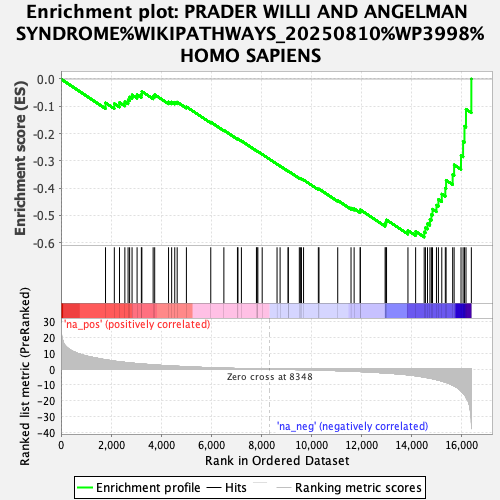
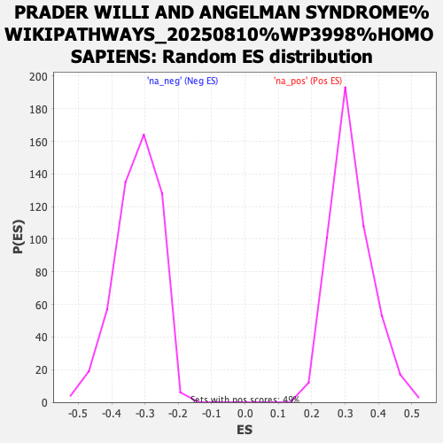

| Dataset | ranked_gene_list |
| Phenotype | NoPhenotypeAvailable |
| Upregulated in class | na_neg |
| GeneSet | PRADER WILLI AND ANGELMAN SYNDROME%WIKIPATHWAYS_20250810%WP3998%HOMO SAPIENS |
| Enrichment Score (ES) | -0.5799997 |
| Normalized Enrichment Score (NES) | -1.7937021 |
| Nominal p-value | 0.0 |
| FDR q-value | 0.2958573 |
| FWER p-Value | 0.923 |

| SYMBOL | RANK IN GENE LIST | RANK METRIC SCORE | RUNNING ES | CORE ENRICHMENT | |
|---|---|---|---|---|---|
| 1 | PRKCZ | 1780 | 5.803 | -0.0874 | No |
| 2 | MSX1 | 2132 | 4.988 | -0.0904 | No |
| 3 | RAE1 | 2339 | 4.563 | -0.0861 | No |
| 4 | EIF4E | 2553 | 4.194 | -0.0836 | No |
| 5 | CDK4 | 2682 | 3.951 | -0.0767 | No |
| 6 | NUP85 | 2743 | 3.859 | -0.0661 | No |
| 7 | TUBGCP6 | 2841 | 3.725 | -0.0582 | No |
| 8 | NUP210 | 3042 | 3.458 | -0.0577 | No |
| 9 | CYFIP1 | 3213 | 3.213 | -0.0562 | No |
| 10 | NGF | 3233 | 3.174 | -0.0456 | No |
| 11 | MDM2 | 3684 | 2.635 | -0.0633 | No |
| 12 | TUBGCP4 | 3746 | 2.560 | -0.0576 | No |
| 13 | NIPA1 | 4300 | 2.008 | -0.0840 | No |
| 14 | NDN | 4424 | 1.902 | -0.0844 | No |
| 15 | NUP93 | 4548 | 1.815 | -0.0852 | No |
| 16 | NUP133 | 4645 | 1.728 | -0.0847 | No |
| 17 | CDC6 | 5014 | 1.444 | -0.1019 | No |
| 18 | BDNF | 5988 | 0.853 | -0.1582 | No |
| 19 | CCND1 | 6512 | 0.589 | -0.1880 | No |
| 20 | NDC1 | 7055 | 0.350 | -0.2199 | No |
| 21 | ATP10A | 7076 | 0.341 | -0.2198 | No |
| 22 | FEZ1 | 7213 | 0.296 | -0.2271 | No |
| 23 | NIPA2 | 7814 | 0.117 | -0.2633 | No |
| 24 | TUBGCP5 | 7840 | 0.110 | -0.2645 | No |
| 25 | NUP160 | 7871 | 0.103 | -0.2659 | No |
| 26 | NUP42 | 8044 | 0.065 | -0.2762 | No |
| 27 | SEH1L | 8638 | -0.065 | -0.3122 | No |
| 28 | NUP107 | 8760 | -0.094 | -0.3193 | No |
| 29 | CDKN2B | 9080 | -0.173 | -0.3381 | No |
| 30 | MKRN3 | 9087 | -0.175 | -0.3379 | No |
| 31 | GABRG2 | 9529 | -0.310 | -0.3637 | No |
| 32 | AAAS | 9571 | -0.320 | -0.3650 | No |
| 33 | TACR3 | 9614 | -0.333 | -0.3663 | No |
| 34 | MDM4 | 9698 | -0.360 | -0.3701 | No |
| 35 | CDKN2C | 10289 | -0.584 | -0.4040 | No |
| 36 | NUP188 | 10315 | -0.594 | -0.4033 | No |
| 37 | NUP98 | 11064 | -0.946 | -0.4456 | No |
| 38 | OCA2 | 11596 | -1.254 | -0.4734 | No |
| 39 | NUP35 | 11720 | -1.344 | -0.4760 | No |
| 40 | CDKN2A | 11964 | -1.516 | -0.4852 | No |
| 41 | GABRB3 | 11966 | -1.517 | -0.4797 | No |
| 42 | NUP155 | 12959 | -2.392 | -0.5315 | No |
| 43 | GABRG3 | 12990 | -2.417 | -0.5243 | No |
| 44 | AHCTF1 | 13016 | -2.438 | -0.5168 | No |
| 45 | RB1 | 13872 | -3.591 | -0.5558 | No |
| 46 | NUP54 | 14179 | -4.160 | -0.5591 | No |
| 47 | NUP205 | 14521 | -5.006 | -0.5615 | Yes |
| 48 | RNF8 | 14571 | -5.140 | -0.5454 | Yes |
| 49 | NUP153 | 14654 | -5.393 | -0.5304 | Yes |
| 50 | HERC2 | 14751 | -5.689 | -0.5152 | Yes |
| 51 | GNRH1 | 14809 | -5.851 | -0.4971 | Yes |
| 52 | CGA | 14854 | -6.019 | -0.4774 | Yes |
| 53 | NUP88 | 15012 | -6.572 | -0.4627 | Yes |
| 54 | CDK6 | 15090 | -6.932 | -0.4417 | Yes |
| 55 | SLC45A2 | 15225 | -7.514 | -0.4221 | Yes |
| 56 | FMR1 | 15366 | -8.181 | -0.4003 | Yes |
| 57 | PCM1 | 15397 | -8.287 | -0.3715 | Yes |
| 58 | FEZ2 | 15660 | -10.050 | -0.3503 | Yes |
| 59 | NUP58 | 15718 | -10.501 | -0.3148 | Yes |
| 60 | POM121 | 15994 | -13.709 | -0.2809 | Yes |
| 61 | RANBP2 | 16077 | -15.172 | -0.2297 | Yes |
| 62 | UBE3A | 16132 | -16.153 | -0.1731 | Yes |
| 63 | NUP214 | 16193 | -17.798 | -0.1109 | Yes |
| 64 | TPR | 16407 | -33.528 | 0.0003 | Yes |
